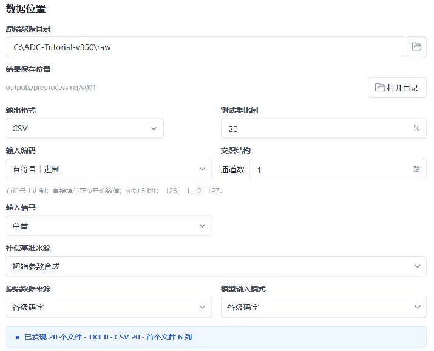
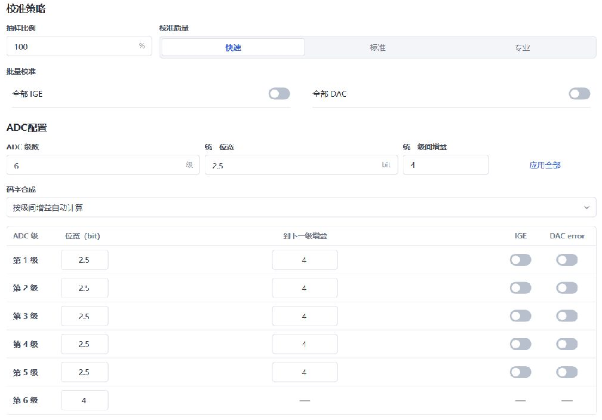
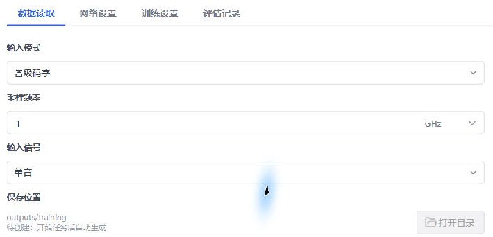
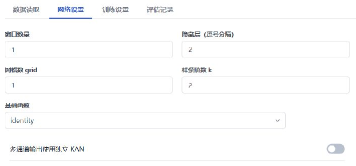
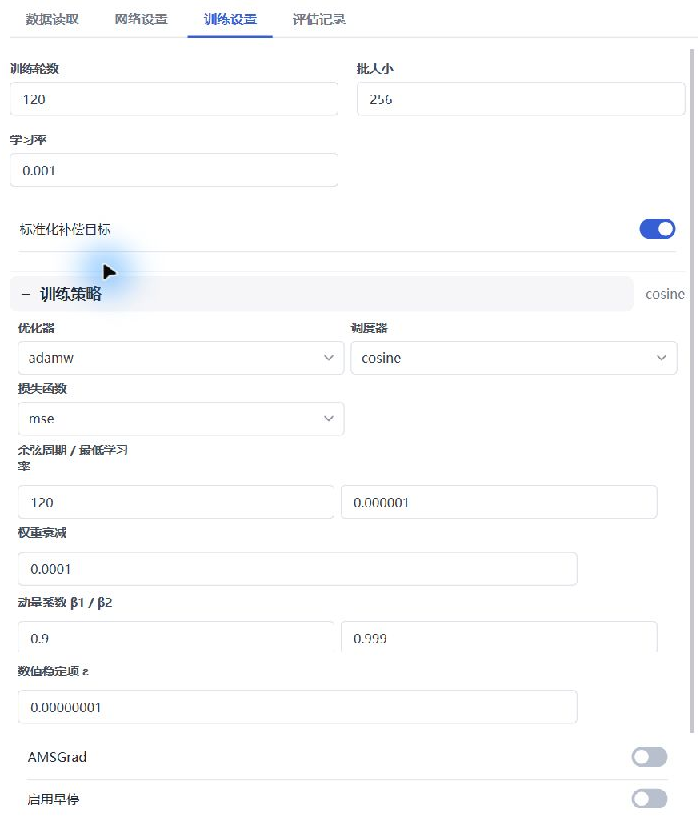
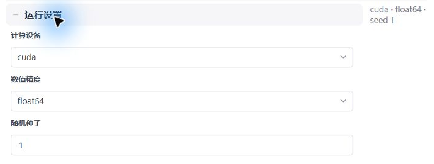
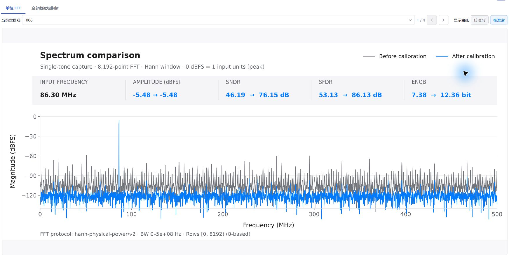
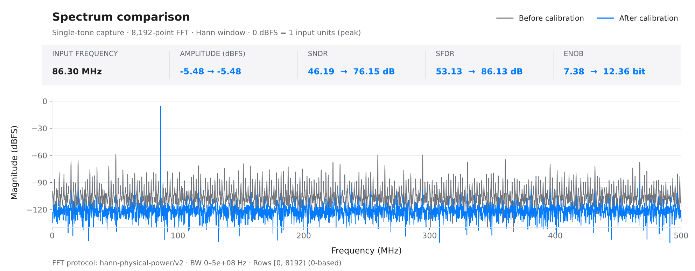

Quick start: calibrate the supplied demo
Installation · Full guide · 中文 · Reference · 中文 · 简体中文
Use the 20 supplied ADC captures to complete preprocessing → small-model training → independent testing → spectrum interpretation. You will obtain 16 training captures, four held-out captures, a 6→2→1 KAN, and a report covering every held-out capture. Screenshots show the actual application in Chinese; the labels below identify the corresponding controls.
1. Prepare the application and understand the data
Extract the complete application as described in Installation, run KAN Workbench.exe, and confirm that a compatible NVIDIA GPU is available in Settings / 设置. Resolve CUDA problems before training using GPU troubleshooting · 中文.
On the repository home page, choose Code → Download ZIP. Extract it and locate examples/tutorial/raw/. Use these 20 files together with this guide; older bundled documentation may describe different examples. Copy raw to a permanent location if convenient, such as C:\ADC-Tutorial-v350\raw.
| Data | Meaning |
|---|---|
20 capture_*.csv files |
One complete capture per file; keep all files in one input directory |
| 8192 rows and six columns per file | Each row contains the six ADC stage codes at the same sampling instant; no header, timestamp or index column |
| Columns 1–5 | Signed codes from five 2.5-bit stages, with legal values -4 through 4 |
| Column 6 | Signed 4-bit backend code, with legal values -8 through 7 |
| Single channel, single tone, 1 GS/s | 1 GHz sample rate; frequency and phase vary across captures; analog input peak amplitude is always -3 dBFS |
The first three rows of capture_001.csv are:
2,0,2,-1,1,-4
0,-2,1,1,-1,1
-1,-2,1,1,-1,2
Commas separate stages, not dataset roles. The 2.5-bit designation describes the stage architecture; stored codes are integers. The simulated ADC has fixed gain, DAC, comparator and small nonlinear errors plus random input noise. It has no memory, jitter or temperature variation. Input noise RMS is 0.25 LSB, defined against 14 bits and a ±1 V full-scale range. See the example description and manifest.
| Step | Input | Purpose and output |
|---|---|---|
| Preprocess | Six-column raw codes | Build model inputs, a baseline and sine-fit references; hold out complete captures |
| Train | train_16 |
Learn a compensation value from the stage codes and save a checkpoint |
| Test | Frozen model plus raw_test |
Measure improvement on four captures excluded from this model's training |
The training target is reference - baseline; the calibrated output is baseline + predicted compensation. Preprocessing fits the single-tone reference. Raw CSV files contain no ideal-output labels, and training does not read the simulator's true error parameters.
2. Create a project and configure preprocessing
Choose New / 新建 in the project area. The application creates a timestamp-named project automatically; Edit / 编辑 renames it and Directory / 目录 locates it. The application creates task output directories within this project.
Open Data / 数据 and select your raw directory in Raw data directory / 原始数据目录.
| Control | Set to | Why |
|---|---|---|
| 输出格式 | CSV | Keep generated numeric files easy to inspect |
| 测试集比例 | 20% | Hold out four of 20 complete captures |
| 输入编码 | 有符号十进制 / signed decimal | Input codes include negative integers |
| 通道数 / 输入信号 | 1 / 单音 (single tone) | Match this acquisition |
| 原始数据来源 / 模型输入模式 | 各级码字 / stage codes for both | Retain all six stage observations |
| 补偿基准来源 | 初始参数合成 / nominal reconstruction | Compare against a common uncorrected baseline |

| ADC control | Set to | Why |
|---|---|---|
| ADC 级数 | 6 | One stage per input column |
| Stage 1–5 位宽 | 2.5 each | Five redundant pipeline stages |
| Stage 6 位宽 | 4 | The backend quantizer differs from the preceding stages |
| Stage 1–5 到下一级增益 | 4 for every stage | Match the nominal structure, including stage 5 |
| 码字合成 | 按级间增益自动计算 | Compute weights from nominal gains |
| 抽样比例 / 校准质量 | 100% / 快速 (quick) | Keep every sample in this small dataset |
| All IGE / all DAC switches | Off | Observe KAN correction without coarse-calibration optimization |
Enter 4 in 统一级间增益, choose 应用全部, then check each row. All five IGE and all five DAC switches must be gray/off. Merely editing the common gain field does not apply it to every stage.

3. Check and preprocess
- Choose 1. 检查数据 / Check data. Confirm 20 files, six columns per file, and no encoding or format errors.
- Choose 2. 开始预处理 / Start preprocessing. Wait for 预处理完成.
- Confirm 16 training groups and four test groups. Use 打开目录 / Open directory to inspect the outputs.
To edit settings after checking, choose 重新开始 / Restart, then check again. A new check may produce a new random capture split; the training seed does not fix the preprocessing split.
project/outputs/preprocessing/v001/
├─ train_16/
│ ├─ inputs/ normalized six-column model inputs
│ ├─ baseline/ nominal single-column reconstruction
│ └─ reference/ fitted single-tone target reference
├─ test_4/ prepared data for held-out captures
└─ raw_test/ entry point to held-out raw captures
Completion check: each role has 20 files across the 16 training and four test groups. raw_test may contain only raw_sources.json, which refers to the original files. Keep the original raw directory. Existing projects may use v002 or later; use the directory produced by this run.
Unchanged coarse-calibration ENOB is expected with IGE/DAC disabled. This step prepares data and the split. Evaluate the KAN improvement after training.
4. Configure the small network
Open Configuration / 配置 → 浮点模型 → 模型训练. Verify that 训练数据 / Training data points to this run's train_16, rather than the raw or test directories. Set 每组读取行数 to 8192.
On 数据读取 / Data reading, choose 各级码字, 1 GHz sample rate and 单音. One GHz is 1000 MHz; this setting determines the reported frequency axis.

On 网络设置 / Network settings, enter:
| Control | Value | Purpose |
|---|---|---|
| 窗口数量 | 1 | Use the current sample's six codes; this demo has no memory effect |
| 隐藏层（逗号分隔） | 2 | One hidden layer containing two nodes |
| 网格数 grid / 样条阶数 k | 1 / 2 | Limited nonlinear capacity for the static error |
| 基础函数 | identity | Keep a linear branch |
| 多通道输出使用独立 KAN | Off | There is only one output channel |

Completion check: the network preview should show 6→2→1. The application records 214 parameters. Six inputs come from six columns times one sample; the output is one compensation value. A 30-input preview indicates that the window is still 5. If the preview shows an unresolved input count, reselect the training directory.
5. Train and confirm the saved model
On 训练设置 / Training settings, fill the basic fields and expand 训练策略 / Training strategy and 运行设置 / Runtime settings.
| Setting | Value | Purpose |
|---|---|---|
| 训练轮数 / 批大小 | 120 / 256 | Fixed training budget and minibatch size |
| 学习率 | 0.001 | Update step size |
| 标准化补偿目标 | On | Normalize the small compensation target for optimization |
| 优化器 / 损失函数 | adamw / mse | Fit compensation with squared error |
| 调度器 / 余弦周期 / 最低学习率 | cosine / 120 / 0.000001 | Reduce update size late in training |
| 权重衰减 | 0.0001 | Mild parameter regularization |
| β1 / β2 / ε | 0.9 / 0.999 / 0.00000001 | Match the validated optimizer settings |
| AMSGrad / 启用早停 | Both off | Complete the fixed 120 epochs |

In 运行设置, set device cuda, precision float64 and seed 1. On 评估记录, turn off 训练后评估当前数据 and leave the per-epoch spectrum input paths empty. Final evaluation uses the held-out captures after training.

Choose 开始训练 / Start training. On the training page, confirm CUDA · FP64, advancing epochs and finite loss. The overall loss should decline; it need not decrease at every epoch.
Completion check: status 训练完成, progress 120/120, and both checkpoints/best.pt and checkpoints/last.pt under 打开目录. best.pt is selected by training loss, not held-out validation loss. Low training loss alone does not rule out overfitting.
6. Test all four held-out captures
Choose 模型测试 / Model test at the bottom of the completed training page. The application carries over the checkpoint and raw_test. Alternatively, open 测试 / Test and select them manually.
- Check 测试模型 points to the completed task's
checkpoints/best.pt. - Check 原始采集数据目录 points to this preprocessing run's
raw_test.test_4contains prepared outputs; this test entry expects raw captures or their references. Do not select the original directory containing all 20 files. - Select 单音 and set 每组读取行数 to
8192. The model supplies the sample rate and preprocessing settings, including 1 GHz here. - Choose 开始测试 / Start test and confirm completion for four groups.
On 单组 FFT, select a capture and enable both 校准前 / Before and 校准后 / After. Use the arrows to inspect each group. 全部数据组指标 shows all results; do not report only the strongest improvement.

7. Interpret the spectra and noise
The following plot shows an actual model result on a simulated held-out capture. Both traces use the same 8192 samples, periodic Hann window and 0–500 MHz band.

First check that the fundamental frequency and amplitude are preserved, then examine distortion and spurs. SNDR includes noise and distortion; SFDR describes the largest spur. Compare only matching measurement conditions. ENOB is derived from SNDR and does not increase the ADC's physical bit count.
Static calibration does not remove random input noise
The apparent spectral floor can contain random input noise, quantization error and reconstruction error. A lower floor after calibration is not evidence that true input noise has disappeared.
An additional physical reference inverts the known static gains, DAC offsets and nonlinear residue law from the same ADC codes. It retains input noise and backend quantization error. These known simulator parameters are used only for verification and plotting; the trained model does not receive them.

Across 262,144 independent noise pairs, the calibrated random-input-noise transfer coefficient is 1.0009, approximately one. Remaining random output RMS is 1.526 times the input-noise RMS, including quantization and remaining conversion error. Mean SNDR is 76.04 dB on training captures and 76.11 dB on final test captures, with no evident training advantage. See small-model validation and noise checks for the complete method. This checks the stated simulation conditions; it is not a general guarantee against overfitting.
Results for every held-out capture
| Capture | SNDR before | SNDR after | Gain | SFDR before | SFDR after | Gain |
|---|---|---|---|---|---|---|
| 006 | 46.19 | 76.15 | +29.97 | 53.13 | 86.13 | +33.00 |
| 012 | 46.19 | 76.13 | +29.94 | 53.08 | 86.51 | +33.43 |
| 013 | 46.18 | 76.05 | +29.86 | 53.09 | 86.39 | +33.29 |
| 009 | 46.18 | 76.10 | +29.92 | 53.03 | 86.16 | +33.13 |
Units: dB. All four final test captures are included. Capture IDs and results can vary with the application's random file split and runtime environment.
Settings were selected using separate training-side validation captures, then frozen before final training and testing. Final test captures were not used to choose architecture, epoch count or checkpoint. Follow the fixed settings for this walkthrough. When tuning your own model, reserve validation captures separately and keep final test data independent. This demo tests new captures from one fixed simulated ADC at one amplitude; it does not establish generalization across amplitude, temperature or hardware.
8. Save and check the experiment
Use 打开目录 to preserve the complete project and original raw data. The test folder contains test_summary.json, fft_summary.csv, and per-capture predictions, metrics and SVG spectra under groups/.
Confirm the 16/4 split, completed training, four test results and accessible model/spectrum files. Preserve the complete task configuration and preprocessing metadata with the model. See backup and migration · 中文. For measured captures, revisit the ADC structure and acquisition conditions using the full guide · 中文.